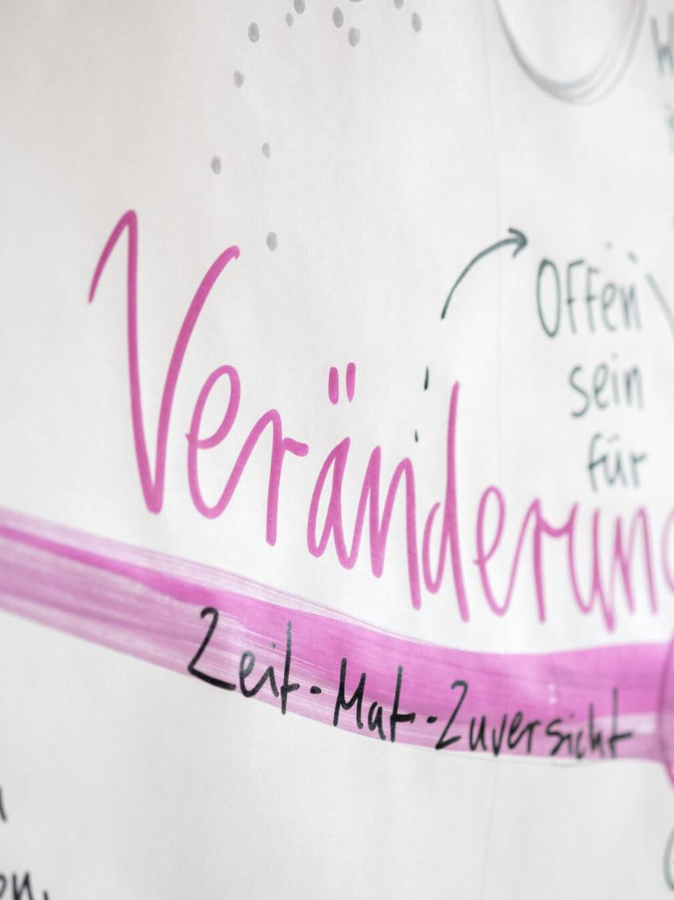

← Zur Startseite
Einzelbegleitung
Ich halte Raum, in dem du dir selbst in deiner Essenz begegnen kannst.
Du bringst dein Anliegen mit. Gemeinsam machen wir sichtbar, was in dir schon da ist.
Du bringst dein Anliegen mit. Gemeinsam machen wir sichtbar, was in dir schon da ist.
Du bringst dein Anliegen mit — eine Frage, eine Entscheidung, ein Gefühl von Stillstand, das du nicht recht benennen kannst. Wir setzen uns hin und fangen an zu sprechen.
Während wir sprechen, entsteht an der Wand ein Bild: deine Situation, deine Kräfte, dein nächster Schritt. Oft siehst du erst am Ende, was da eigentlich steht.
Was gerade schwierig ist, ist dabei das Material selbst. Es lässt sich nicht wegarbeiten, aber es verändert sich, wenn es gesehen wird — von dir, und von jemandem, der nicht zusammenzuckt.
Ich halte den Raum. Den Schritt gehst du selbst.



Online, telefonisch oder vor Ort. Wir klären, worum es geht und ob es zwischen uns passt. Unverbindlich — wenn es nicht passt, sage ich das auch.
Erstgespräch buchenIch erstelle dein Profil aus Geburtsdatum, -uhrzeit und -ort und schaue es mir in Ruhe an.
90 Minuten. Wir sprechen, und an der Wand entsteht ein Bild: deine Situation, deine Kräfte, dein nächster Schritt.
Du nimmst das gezeichnete Blatt mit. Es arbeitet weiter, auch wenn du nichts weiter damit tust.
Drei Termine im Abstand von zwei bis drei Wochen. Genug Zeit, dass etwas sackt.
Zwischen den Terminen ein Integrations-Call von 15 Minuten, dazu Erreichbarkeit per Telefon oder Telegram. Accountability und Co-Regulation. Genau daran scheitert es sonst oft.
Drei Bilder, die nebeneinander etwas zeigen, das in einer einzelnen Session nicht sichtbar wird.
Sechs Termine über ein halbes Jahr, im Tempo, das zu dir passt.
Zweimal 15 Minuten zwischen den Terminen: Integration, Accountability, Co-Regulation. Dazu durchgehende Erreichbarkeit.
Eine Reihe von Bildern, die zusammen eine Landkarte ergeben. Man sieht, wohin sich etwas bewegt hat.
Ich zeichne live mit, während wir sprechen. Ein Bild, das mitdenkt und mitwächst — du siehst deine eigenen Worte auf einmal von außen.
Eine Landkarte aus Geburtsdatum, -uhrzeit und -ort, die Linien zeigt, an denen sich weiterfragen lässt.
Das, was beides trägt. Ich bin da, ohne zu bewerten — darauf können Zeichnung und Landkarte überhaupt erst etwas zeigen.
Ich arbeite mit den Gene Keys — einem Schlüssel, der aus deinen Geburtsdaten entsteht: eine Landkarte für das, was in dir angelegt ist, kein System, das dir sagt, wer du bist.
Ja. Auf genekeys.com gibt es das Holographic Profile kostenlos. Du musst es aber nicht — ich bringe es ohnehin mit.
Dann arbeiten wir mit dem, was da ist. Ein Teil des Profils hängt an der Uhrzeit, der Kern aber nicht. Oft steht die Zeit in der Geburtsurkunde oder im Stammbuch, und wenn nicht, ist das kein Hindernis.
Ja. Ich zeichne so, dass du es über Video mitverfolgen kannst, und schicke dir das Bild danach zu.
Das ist die häufigste Ausgangslage. Wir schauen im Moment, was sich zeigt — meistens wird es schnell klar.
Dann lassen wir sie weg. Das Wesentliche ist das Gespräch und das Bild — das funktioniert auch ohne.
Nein. Ich bin kein Therapeut und arbeite nicht heilkundlich. Es geht um Selbsterkenntnis und Orientierung, nicht um Behandlung.